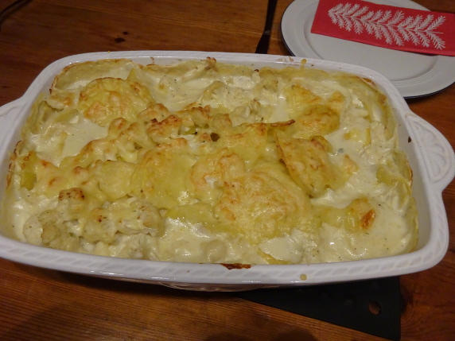

Blumenkohl-Auflauf

- Zubereitung: ca. 25 Minuten
- Garzeit: ca. 25 Minuten
- Für 4 Portionen
Zutaten
- 750 g Blumenkohl
- 500 g Kartoffeln
- 30 g Mehl
- 30 g Butter
- 250 ml Gemüsebrühe
- 250 ml Milch
- 200 g Schmelzkäse
- Muskat
- 2 Scheiben Gouda
Zubereitung
- Blumenkohl waschen und klein schneiden. Die Kartoffeln schälen und in Scheiben schneiden. Alles in kochendem Salzwasser 5 Minuten blanchieren.
- Mehl mit Butter anschwitzen und mit Brühe und Milch ablöschen. Unter Rühren 5 Minuten kochen. Den Schmelzkäse einrühren. Mit Salz, Pfeffer und Muskat würzen.
- Eine Auflaufform einfetten. Die Kartoffelscheiben und den Blumenkohl einfüllen. Die Sauce darübergießen und mit dem Käse belegen. Im vorgeheizten Backofen ca. 25 Minuten backen.
Quelle: https://www.chefkoch.de/rezepte/481451142218216/Blumenkohl-Brokkoli-Auflauf.html